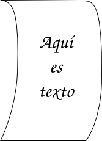
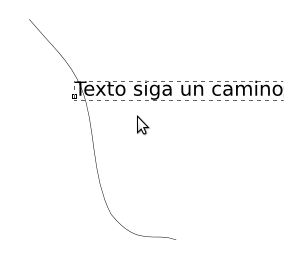
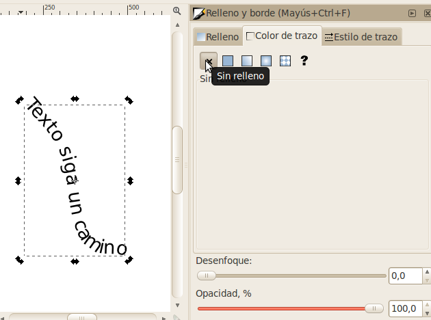

Inkscape
Inkscape será el editor de vectores en el que hacemos la mayoría de
nuestros trabajos. Una vez que hayamos aprendido los fundamentos
aquí, vamos a pasar a estudiar los mismos conceptos en Adobe Illustrator,
que es el otro editor de gráficos en el mercado.
Para empezar con Inkscape, hay tres tutoriales interactivos que están
integrados en el programa que son muy buenos, y porque son
interactivos,
son más que palabras en el papel, así que en vez de leer lo que estará
en los tutoriales aquí, vamos a abrir Inkscape e intentarlos de una vez.

Cuando haya abierto Inkscape...
Básicso de Inkscape
Vaya al menú Ayuda -> Tutoriales -> Inkscape: Básico. El
tutorial se abrirá en una ventana nueva y podrás leer (e intentar!)
todo sobre el
paneo (pan), el zoom, las herramientas, documentos, mover (move),
escalar
(scale), rotar (rotate), teclas importantes (keys), seleccion
(selection), rellenos (fill), trazos (stroke), la duplicación, las
capas, y la profundidad (depth).
El proximo seciones del tutoriale no tiene un tranduction:
Inkscape opens a separate document window for each document. You can
navigate among them using your window manager (e.g. by Alt+Tab), or you
can use the Inkscape shortcut, Ctrl+Tab, which will cycle through all
open document windows. (Create a new document now and switch between it
and this document for practice.) Note: Inkscape treats these windows
like tabs in a web browser, this means the Ctrl+Tab shortcut only works
with documents running in the same process. If you open multiple files
from a file browser or launch more than one Inkscape process from an
icon it will not work.
Inkscape abre una nueva ventana para cada documento. Puedes
navegar los documentos usando tu manejador de ventanas (ej. con
Alt+Tab), o puedes usar la clave de teclado de Inkscape, Ctrl+Tab, la
cual te permite rotar entre todos los documentos abiertos. (Para
practicar, crea un documento nuevo ahora y alterna entre el nuevo
documento y este documento.)
You can use the keyboard to move (arrow keys), scale (< and >
keys), and rotate ([ and ] keys) objects. Default moves and scales are
by 2 px; with Shift, you move by 10 times that. Ctrl+> and Ctrl+<
scale up or down to 200% or 50% of the original, respectively.
Default rotates are by 15 degrees; with Ctrl, you rotate by 90 degrees.
Puedes usar el teclado para mover (teclas direccionales), escalar
(teclas < y >) y rotar (teclas [ y ]) objetos. Los
movimientos y escalas estándar son de 2 pixeles; con Shift, los
movimientos son 10 veces más extensos. Ctrl+> y Ctrl+<
escalan hacia arriba o hacia abajo - a 200% ó 50% del tamaño original,
respectivamente. Rotaciones estándares son de 15 grados; con
Ctrl, puedes rotar a 90 grados.
Note: Linux users may not get the expected results with the Alt+arrow
and a few other key combinations if their Window Manager catches those
key events before they reach the inkscape application. One solution
would be to change the WM's configuration accordingly.
Nota: Es posible que usuarios de Linux no observen los resultados
esperados con el comando Alt+tecla dimensional, y algunas otras
combinaciones, si su manejador de ventanas detecta esos eventos antes
de que Inkscape los detecte. Una solución podría ser cambiar la
configuración del manejador de ventanas.
[If you are on Linux, you might find that Alt+click does not work
properly. Instead, it might be moving the whole Inkscape
window. This is because your window manager has reserved
Alt+click for a different action. The way to fix this is to find
the Window Behavior configuration for your window manager, and either
turn it off, or map it to use the Meta key (aka Windows key), so
Inkscape and other applications may use the Alt key freely.]
(Si eres un usuario de Linux, tal vez observes que Alt+click no
funciona de forma apropiada. En cambio, puede que mueva la
ventana de Inkscape completa. Esto sería porque tu manejador de
ventanas ha reservado el comando Alt+click para una acción
distinta. La manera de resolver esto es buscar la configuración
del manejador de ventanas, y ya sea desactivarlo o ajustarlo para que
usa la tecla Meta (la tecla Windows), de manera que Inkscape y otras
aplicaciones puedan usar la tecla Alt libremente.)
Ejercicio de Basicos
Ahora que tenemos una comprensión sobre los conceptos básicos,
vamos a hacer un ejemplo. Hay un archivo .svg, que puede abrir
en Inkscape con todo el material que vamos a necesitar.
BasicScene-orig.svg

En
este archivo SVG, hay un fondo (background) configurado (se compone de
dos partes: el primer plano (foreground) con todos los árboles, la
tierra
y el agua, y el transfondo con el cielo). También hay tres
componentes distintos que deben ser añadir. El fuego y la tienda
deben ser
reducidos y puestos en el área vacía entre los árboles. Las
montañas deben ser ampliadas y puestas detrás de la tierra y los
árboles, pero al frente del cielo.
El resultado final se verá así.

Trabajando con Formas
Una vez que hayas dominado los fundamentos, vamos a pasar a la siguente
tutorial: Formas (Shapes)
Ayuda -> Tutoriales -> Inkscape: Formas
Aquí vamos a conocer y practicar:
Rectángulos (con redondeo), elipses y círculos, estrellas y polígonos,
y espirales.
Ahora vamos a practicar usar todas las herramientas de forma y muchas de
sus diferentes opciones. En una página de Inkscape, dibuja lo siguente.
Rectángulo: Relleno sin trazo, trazo sin relleno, relleno y trazo,
esquinas redondeadas, esquinas redondeadas con bordes.
Ellipse: Ellipse, corte, y arco.
Polígono/Estrella: Polígono, polígono con diferente número de lados,
estrella, estrellas con puntos de compensación, polígono con esquinas
redondeadas, polígono con aleatoriedad.
Espiral: Espiral, Espiral con menos vueltas, espiral que no se inicia
desde el centro, espiral con divergencia más rápida.
Su página puede ser algo como esto:

Ejercicio Creativo 1:
Use solamente las formas básicas (y llenar varios colores
relleno/trazo) para crear una imagen del arte abstracto.
Ejercicio Creativo 2:
Utilice la herramienta estrella para crear un patrón único.
Trayectos y Texto
Por último, tenemos un último tutorial que introduce algunos de los
conceptos más importantes:
Ayuda -> Tutoriales -> Inkscape: Avanzado
Aquí vamos a aprender sobre:
Cortar y pegar, dibujo con mano libre (free hand drawing), curvas bezier, caminos
y texto.
Una de las partes más importantes de esta sección es la de cómo trabajar
con curvas bezier. Para obtener un poco de práctica, vamos a
convertir un simple rectángulo en una hoja de papel que está comenzando
a acurrucarse. El resultado final se verá así:

Primero, descarga el archivo
.svg del rectángulo original.
Usted notará que hay un par de nodos útiles a mitad de camino por los
lados del rectángulo. Vamos a halar ambos de
los nodos a la derecha (usando el modo de edición de nodos).
Una vez que los hayamos estirado, vamos a añadir algunas curvas bezier
en las líneas rectas. Para ello, mantenga pulsada la tecla
Mayúscula (Shift) mientras hace clic en uno de los nodos, y arrastre hacia
fuera. Esto debería crear un controlador para la curva que
sale de ese punto. Sigue adelante y haz eso con ambos lados
de los puntos medios, y luego también con las líneas que bajan de los dos
puntos superiores.
Una vez que tenemos el papel suavemente curveado, podemos añadir un
texto
de ejemplo. Para ello, vamos a cambiar a la herramienta de
texto. A continuación, haga clic cerca del centro del papel y
comienze a añadir cualquier
tipo de texto que desee ver. Puede cambiar el tamaño de letra, la
alineación, y el tipo de letra para que se vea como quieras.
Texto en un Trayecto
Ahora que tenemos aprendidos los fundamentos, vamos a utilizar la herramienta de trayecto para que el texto
siga una trayectoria irregular a través de nuestro dibujo.
Vamos a comenzar por hacer un trayecto simple con la herramienta
Curvas Beizer

Una vez que tenemos la forma básica, vamos a manipular los controladores de la curva para suavizarla.

Luego cambiemos a la herramienta de texto y escribamos algún
texto.

Ahora vamos a seleccionar tando el trayecto como el texto.

Con ambos seleccionados, hagamos clic en Texto -> Ponga en Trayecto

Se ve bien hasta el momento, ahora sólo tenemos que deshacernos de
esa línea que tenemos allí. Para ello podemos seleccionar la
línea y retirar su trazo.

Finalmente nos quedamos sólo con nuestro texto.